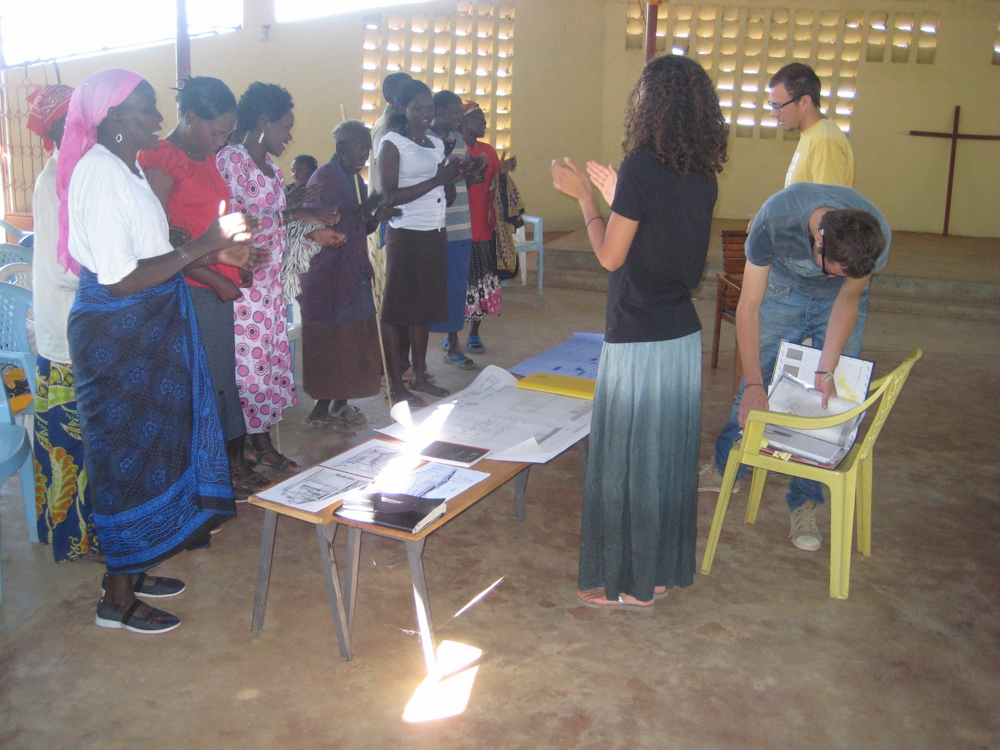
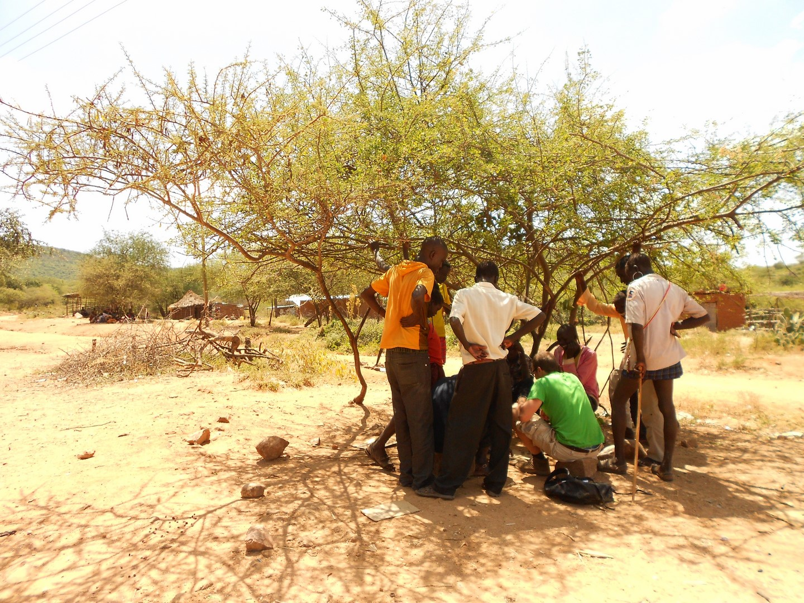

TEAM POKOT
Team Pokot is a group of young, enthusiastic, recently graduated architects, building engineers and a health scientist. We want to support the EPMP and work on this project voluntarily.
In 2012 Team Pokot went to Pokot for the minor International Entrepreneurship and Development (IE&D). During our stay we learned about the needs of the local community and the EPMP. We researched which physical structures the EPMP requires to provide health care and information. Moreover we studied how architecture can contribute to empowerment of the community and improvement of their health.
Together with the community and the EPMP, we developed a program of requirements, selected the building site and developed the concept for the initial design of the centre. During these months, we managed to raise a large sum of money for the project.

We became so inspired and motivated by the people in Pokot that we decided to realise the construction after graduation. We graduated in 2016, resumed fundraising activities and in 2018 the construction will start.
Since 2012 two groups of students from Delft University went to Pokot and developed a plan to supply the centre of sustainable energy and water. Therefore the roof will be covered with solar panels and used to collect rainwater. Furthermore they looked at solutions for the water problems in Barpello and concluded the centre can provide public water and function as an example of a clean water source. Hence next to the rainwater tanks, a pan dam and a borehole will be realised. The latter is to ensure a reliable water source in periods of drought.

As a team we works on this project from our core values. These values are important pillars of this project. Some of these values are also formulated in the Sustainable Development Goals (SDG). These core values are:
- Empowerment
- Equality (Exchange and knowledge)
- Sustainability
- Good Health & Well-being (SDG3)
- Quality Education (SDG4)
- Gender Equality (SDG5)
- Clean Water & Sanitation (SDG6)
- Reduced inequalities (SDG10)
